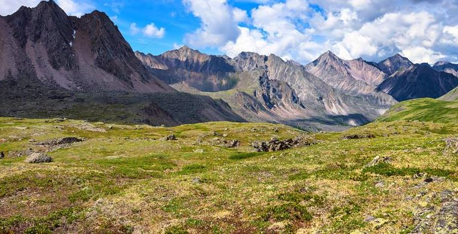
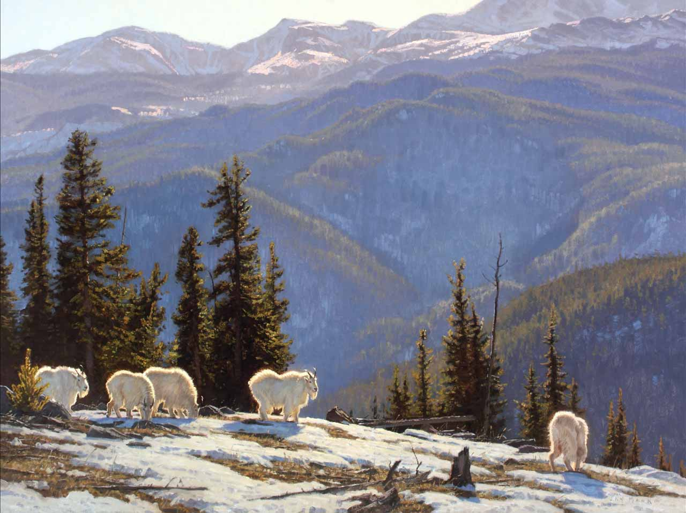

Tundra

Características
La tundra es el bioma más frío del planeta, lo que se deduce desde el significado de su nombre: “llanura sin árboles”. Es prácticamente un desierto polar que se caracteriza principalmente por un clima sumamente frío, fuertes vientos, pocas precipitaciones, suelo pobre en nutrientes, baja diversidad biológica, vegetación baja y de estructura sencilla y estaciones de crecimiento cortas. Sin duda, el paisaje de la tundra es más conocido por la capa de nieve y hielo que cubre montes y parte del suelo.
Ubicación geográfica
La tundra se ubica en latitudes altas en las regiones polares, principalmente en el hemisferio norte de la Tierra, y abarca lugares como Siberia, Alaska, Islandia, la parte sur de Groenlandia, el norte de Canadá y Europa (incluyendo Rusia y Escandinavia), el norte de la Antártida e islas subantártica y zonas entre Chile y Argentina. Debido a los fuertes vientos, las escasas precipitaciones y el clima frío, las cimas de las montañas también poseen este bioma.
Hay 3 tipos básicos de tundra:
Ártica.
Se localiza en el hemisferio norte por debajo de las capas de hielo ártico, y se extiende hasta el límite de los bosques de coníferas de la taiga. Cerca de la mitad de Canadá y una buena porción de Alaska están dominadas por la tundra.
Alpina.
Está en las montañas de cualquier lugar del mundo, a alturas donde no crece ningún tipo de árbol. A diferencia de la tundra ártica, sus suelos suelen estar bien drenados, y por lo tanto, no tienen permafrost.
Antártica.
Un tercer tipo, la tundra antártica, es la menos común. Se presenta en el continente y en algunas islas como las Kerguelen y en el Territorio británico de ultramar de las Islas Georgias del Sur y Sandwich del Sur.
Clima
Debido a su proximidad con los polos, el clima de la tundra se mantiene bajo cero durante la mayor parte del año, es decir, de 6 a 10 meses. En la tundra ártica la temperatura promedio es de -12 a -6 ºC; en invierno el promedio es de -34 ºC y en verano alcanza hasta -3 ºC. Las temperaturas de la alpina pueden ser ligeramente más cálidas, al registrarse en verano unos 10 ºC; sin embargo, durante las noches descienden varios grados bajo cero.
En general, los inviernos en la tundra son extremadamente fríos, oscuros, largos y secos y pueden llegar hasta los -70 °C. Aunque la mayoría del año presenta nevadas, en el verano se mantiene un clima menos helado de -28 °C y con algunas lluvias ligeras. Las precipitaciones, a menudo en forma de nieve, oscilan entre los 150 y 250 milímetros al año, una cantidad aún menor que la de los desiertos cálidos.
Flora
En la tundra no existen árboles ya que no sobrevivirían con tales temperaturas, pero sí crecen plantas bajas y hasta 400 especies de plantas con flores. Además de las condiciones climatológicas y la escasez de precipitaciones, la falta de descomposición de elementos orgánicos hace que la tierra no sea nutritiva para que exista gran vegetación. Esta crece de forma dispersa, con algunos parches más abundantes que otros como consecuencia de las variaciones de humedad y otros factores.
Se estima que en la tundra ártica y subártica existen unas 1,700 especies de plantas que incluyen pastos y hepáticas. Los musgos conforman la vegetación más común, pues debido a que solo miden unos 10 centímetros y se encuentran cerca del suelo, soportan los fuertes vientos sin ser arrancados y en invierno están protegidos por la nieve.
En este bioma prosperan los brezales, las juncias y algunos arbustos enanos, así como líquenes. Las plantas en cojín encuentran su lugar entre las depresiones de las rocas, donde están resguardadas de los vientos y el ambiente es un poco más cálido. En la tundra alpina se hallan pastizales tussok, brezales y hasta árboles enanos.
Fauna
Los animales de la tundra están físicamente adaptados a este tipo de clima. Poseen largo pelaje y están protegidos por capas gruesas de grasa debajo de su piel. Algunos de ellos son de color blanco, lo que les permite camuflarse entre la nieve y huir de sus depredadores. En general, en la tundra habitan renos, caribúes, liebres, zorros árticos, lobos, halcones, bueyes almizcleros, osos polares y varias especies de aves. En los litorales viven focas y lobos marinos.
Específicamente, la tundra ártica es hogar de lobos, zorros árticos, osos polares, lemmings, ardillas, liebres árticas, caribúes, arvicolinos, cuervos, halcones, colimbos, gaviotas, abejorros árticos, polillas, moscas negras y saltamontes, mientras que la fauna de la tundra alpina, que carece de osos polares y otras especies propias únicamente del Ártico, incluye cabras monteses, pikas, marmotas, ovejas, mariposas y saltamontes.
